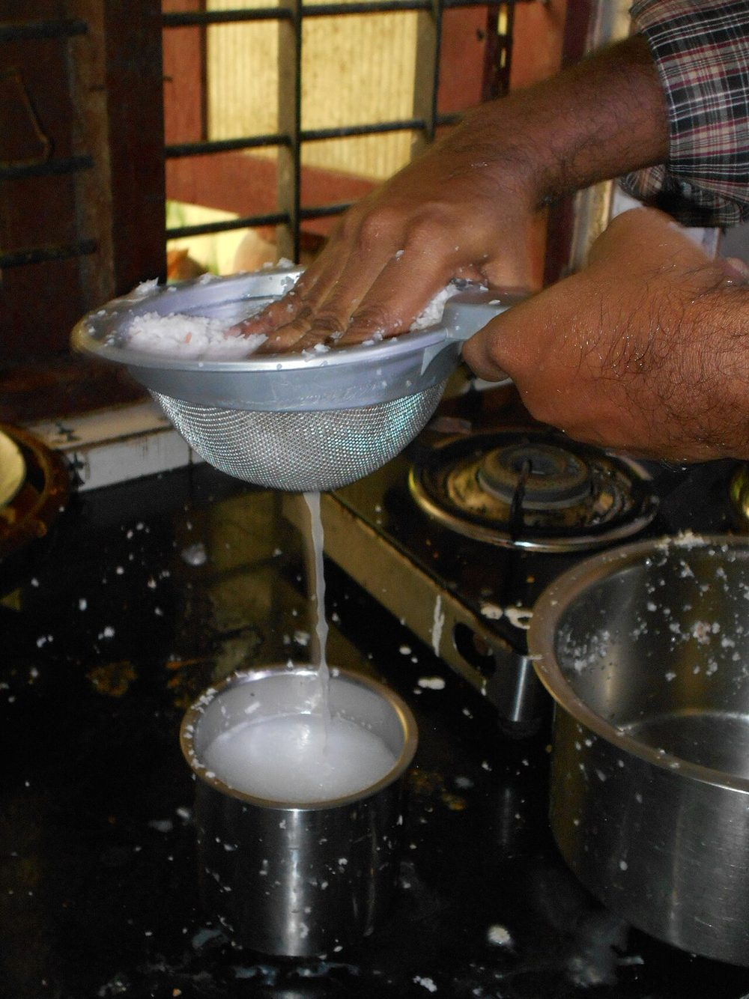

Contains: milk, tree nuts
Checked against the ingredient list for ten allergens: milk, egg, fish, crustaceans, tree nuts, peanuts, sesame, mustard, soy and gluten. Brands vary, so read the label on anything new to you.
Ingredients
Quantities for 4.
- 3/4 cup, dry-roasted until golden Moong Dalroasting is what gives payasam its nutty depth
- 1.5 cups, grated Jaggerydark jaggery for colour and a deeper taste
- 1.5 cups thick, plus 1 cup thin Coconut Milk
- 4 tbsp Ghee
- 15, whole Cashewoptional
- 2 tbsp Raisinsoptional
- 2 tbsp, cut into thin slivers Coconutoptional
- 1/2 tsp, powdered Cardamom
- 1/4 tsp Dry Ginger Powderthe traditional finish; it keeps the sweetness from cloying
- 2.5 cups Water
Cookware
pressure cooker, stovetop
Before you start
- Dry-roast the moong dal on low heat for 5 minutes until golden and fragrant, then rinse and drain it.
- Melt the jaggery with 1/2 cup water and strain it. Jaggery almost always carries grit.
- Keep the thick coconut milk aside and do not let it near a boil later.
Method
- Pressure cook the roasted dal with 2 cups water for 4 whistles until completely soft.
- Mash the cooked dal lightly with a ladle, leaving some texture.
- Melt the jaggery with 1/2 cup water on low heat, then strain out the sediment.
- Add the strained jaggery syrup to the dal and simmer 8 minutes until it thickens and darkens.Cooking the jaggery into the dal, rather than just stirring it in, is what makes it taste finished.
- Stir in the thin coconut milk and simmer 3 minutes more.
- Take the pan off the heat and let it stop bubbling before adding the thick coconut milk.Thick coconut milk splits into curds if it boils. Off the heat, always.
- Stir in the cardamom and dry ginger powder.
- Heat the ghee in a small pan and fry the coconut slivers to gold, then the cashews, then the raisins until they puff.They brown at different speeds, so add them in that order, about 20 seconds apart.
- Pour the ghee and fried garnish over the payasam and serve warm.
Storage
Keeps 3 days refrigerated. It thickens to a paste when cold. Reheat gently with 1/4 cup water or thin coconut milk, without boiling.
Nutrition Good estimate
Medium protein: 12 g a serving, 6% of the calories
| Per serving227 g | Per 100 g | |
|---|---|---|
| Calories | 755 kcal | 333 kcal |
| Protein | 11.6 g | 5 g |
| Carbohydrate | 109.3 g | 48 g |
| of which sugars | 82.8 g | 36 g |
| Fibre | 7.4 g | 3 g |
| Fat | 33.8 g | 15 g |
| of which saturated | 26.3 g | 12 g |
| of which unsaturated | 5.5 g | 2 g |
Nearest database match used for jaggery. Estimated from raw ingredients using USDA FoodData Central.
Written and checked against sources, not cooked in a test kitchen. Times, yields, allergens and nutrition are worked out rather than measured, so use your own judgement on doneness and on storing. More in About.